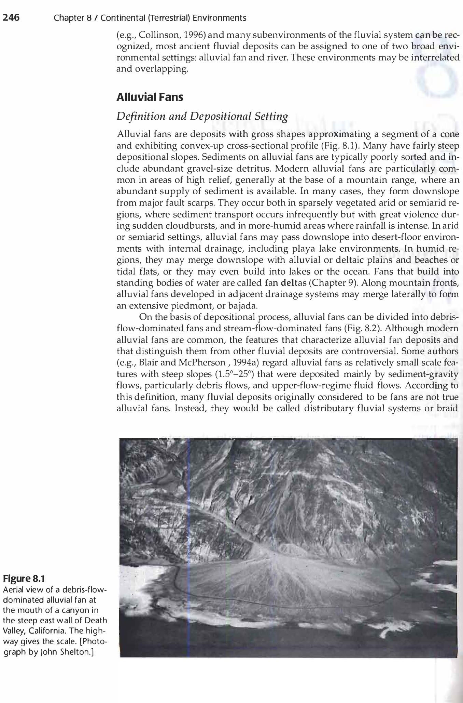

Q001: Geomorphic Architecture of Bajadas, Piedmont Alluvial Fans & Basin Zonation
An alluvial fan is a low, outspread, gently sloping mass of loose clastic alluvium shaped like an open fan or a segment of a low cone, deposited by a stream at the point of sudden topographic break—typically where a high-gradient mountain canyon emerges onto an adjacent piedmont lowland or rift basin floor. When adjacent mountain drainages emerge in close proximity along an active fault-bounded mountain front, the lateral flanks of individual contiguous alluvial fans expand, overlap, and coalesce laterally to construct a broad, continuous, undulating alluvial apron termed a bajada (derived from the Spanish term for "slope" or "descent").
Morphodynamically, a bajada represents a major depositional sediment sink in arid, semi-arid, and paraglacial tectonic basins (basin-and-range topography). Sediment deposition across the bajada system is governed by three primary hydrodynamic transport mechanisms:
- Debris Flows (Viscous Plastic Flow): High-density, matrix-rich slurries composed of poorly sorted boulders, cobbles, and mud ($>80\text{ wt}\%$ sediment) driven by gravity. Debris flows dominate the proximal fan head, depositing unstratified, matrix-supported diamictons with characteristic inverse grading and steep initial depositional dips ($5^\circ$ to $15^\circ$).
- Sheetfloods (Supercritical Unconfined Flow): Broad, unchannelized sheets of sediment-laden turbulent water flowing down the mid-fan slope following sudden flash flood events. Sheetfloods produce couplets of plane-bedded gravelly sand and cross-stratified sands with moderate sorting.
- Channelized Streamflow (Incised Radial Distributaries): Anastomosing and braided distributary channels that bifurcate downstream from the fan apex across the mid-to-distal fan, depositing cross-bedded gravels, sands, and horizontally stratified silts.
Where $A_f$ is fan area ($\text{km}^2$), $A_d$ is contributing drainage basin area ($\text{km}^2$), $c$ is a lithology-dependent coefficient ($0.1$ to $2.0$), and $h$ is a power-law exponent typically ranging between $0.7$ and $1.1$. Fan slope $S_f$ scales inversely with basin area ($m \approx 0.15 - 0.35$).


In structural desert basins (bolsons), the transition from the mountain front to the central basin floor comprises three sharply distinct physiographic zones that are frequently tested in UPSC/OPSC competitive exams:
| Zone | Morphogenetic Nature | Primary Process | Sediment Thickness | Typical Slope |
|---|---|---|---|---|
| Pediment | Erosional bedrock bench | Scarp retreat, sheetwash, lateral stream planation | Thin veneer ($<1 - 2\text{ m}$) or bare bedrock | $0.5^\circ - 7^\circ$ |
| Bajada | Depositional alluvial apron | Coalescence of aggrading alluvial fans | Thick clastic wedge (tens to hundreds of meters) | $1^\circ - 10^\circ$ |
| Playa | Terminal evaporitic basin floor | Suspension settling of clays, chemical precipitation of salts | Thick, horizontally laminated muds & evaporites | $< 0.1^\circ$ (Near horizontal) |
| Fan Sub-Environment | Primary Sedimentary Facies | Bedforms & Structures | Dominant Grain Size | Sorting & Maturity |
|---|---|---|---|---|
| Proximal Fan (Fanhead) | Matrix-supported debris-flow conglomerates ($Gms$), sieve lobes | Inverse grading, crude horizontal alignment, lack of stratification | Boulders, cobbles, gravelly mud | Very poorly sorted; extremely immature |
| Mid-Fan (Braided / Sheetflood) | Clast-supported gravels ($Gm, Gp$), planar/trough cross-bedded sands ($St, Sp$) | Upstream clast imbrication, trough scours, planar cross-stratification | Pebbles, granules, coarse-to-medium sand | Moderately to poorly sorted; subangular |
| Distal Fan (Bajada Toe) | Horizontally stratified sheetflood sands ($Sh$), climbing ripples ($Sr$), silt/mud ($Fl$) | Parallel laminations, ripple drift, mudcracks, desiccation cracks | Fine sand, silt, mud | Moderately sorted; subrounded |
| Playa Fringe / Bolson | Massive muds ($Fm$), nodular gypsum, halite, caliche crusts | Evaporite crystals, tepee structures, desiccation polygons | Clay, silt, chemical salts | Chemically mature; fine suspension settling |
-
Practice Q1 (Numerical): An alluvial fan has a radius $R = 8.0\text{ km}$. The elevation at the fan apex is $1450\text{ m}$ above sea level, while the distal toe of the fan grades into a playa at an elevation of $1050\text{ m}$. Calculate the average depositional slope of the fan in degrees and in percentage gradient.
✔ Worked Answer: Slope angle $\alpha \approx 2.86^\circ$; Gradient $= 5.0\%$Derivation:
Elevation drop $\Delta h = 1450\text{ m} - 1050\text{ m} = 400\text{ m}$.
Horizontal distance $L = 8.0\text{ km} = 8000\text{ m}$.
$$\text{Gradient} = \frac{\Delta h}{L} = \frac{400}{8000} = 0.05 = 5.0\%$$
$$\tan \alpha = 0.05 \implies \alpha = \arctan(0.05) \approx 2.862^\circ$$ -
Practice Q2: What is the fundamental geological difference between a "pediment" and a "bajada"?
✔ Correct Answer: A pediment is an erosional bedrock surface; a bajada is a depositional prism of coalesced clastic alluvium.Explanation: Both occur in piedmont zones. However, a pediment is carved by scarp retreat and sheet erosion into solid bedrock, possessing only a veneer of transient gravel. In contrast, a bajada is built by the active accumulation of coalescing alluvial fans, forming a thick, basinward-thickening clastic sediment wedge.
-
Practice Q3: What sedimentary texture is diagnostic of "sieve deposits" on coarse-grained alluvial fans?
✔ Correct Answer: Well-sorted, open-framework clast-supported gravels completely lacking fine matrix material.Explanation: Sieve deposits occur on steep proximal fans when highly permeable, matrix-deficient coarse gravels allow muddy water to infiltrate instantaneously downwards into the fan body, leaving behind a clean, interlocking open-work framework of pebbles and cobbles devoid of sand and silt.
-
Practice Q4: In Bull's alluvial fan equation $A_f = c A_d^h$, how does drainage basin lithology affect the coefficient $c$?
✔ Correct Answer: Basins underlain by easily erodible sedimentary rocks (e.g., shale, mudstone) have much higher $c$ values than basins underlain by resistant crystalline rocks (e.g., quartzite, granite).Explanation: Erodible rocks generate vastly larger sediment yields for a given runoff volume, building significantly larger alluvial fans ($A_f$) for the same drainage basin area ($A_d$).
-
Practice Q5: What geomorphic process leads to "fanhead trenching" where a stream cuts deeply into its own alluvial fan apex?
✔ Correct Answer: A change in the ratio of sediment load to water discharge (e.g., post-glacial runoff increase), tectonic uplift of the mountain block, or base-level lowering.Explanation: When stream discharge increases relative to sediment load, or when base-level drops, the stream shifts from aggradation to vertical downcutting, entrenching a steep canyon through the fanhead and shifting the active locus of fan deposition further down-fan.
-
Practice Q6: What paleocurrent structure provides the most reliable indicator of flow direction in mid-fan sheetflood gravels?
✔ Correct Answer: Upstream clast imbrication ($a(p)b(i)$ or $a(t)b(i)$ fabrics) where flat pebbles dip upstream into the current.Explanation: Hydrodynamic drag causes tabular clasts in riverbeds and sheetfloods to rotate and settle with their maximum projection planes inclined upstream, offering the minimum resistance to flow.
-
Practice Q7: In seismic reflection profiles of continental rift basins, how does a bajada complex typically manifest?
✔ Correct Answer: As a wedge-shaped clastic prism adjacent to the border fault, exhibiting chaotic to reflection-free proximal seismic facies that transition basinward into high-amplitude continuous parallel reflectors.Explanation: The proximal coarse, unstratified debris flows scatter seismic energy, producing chaotic seismic character, while the distal fine-grained lacustrine/playa sheet sands produce coherent, stratified reflections.
-
Practice Q8: Why are alluvial fans and bajadas in arid regions of critical importance in hydrogeology?
✔ Correct Answer: They serve as primary regional groundwater recharge zones with high porosity and hydraulic conductivity.Explanation: The coarse, highly permeable gravels and sands at the apex and mid-fan absorb episodic mountain runoff and flash floods, funneling freshwater deep into artesian aquifers underlying the arid basin floor.